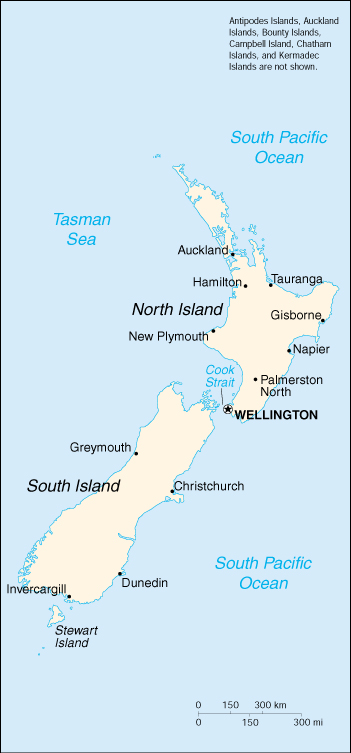

![[Country Flag of New Zealand]](../flags/nz-lgflag.jpg)
| New Zealand |
|
         |  | |
| Introduction |
Background: The British colony of New Zealand became an independent dominion in 1907 and supported the UK militarily in both World Wars. New Zealand withdrew from a number of defense alliances during the 1970s and 1980s. In recent years the government has sought to address longstanding native Maori grievances.
| Geography |
Location: Oceania, islands in the South Pacific Ocean, southeast of Australia
Geographic coordinates: 41 00 S, 174 00 E
Map references: Oceania
Area:
total:
268,680 sq km
land:
268,670 sq km
water:
10 sq km
note:
includes Antipodes Islands, Auckland Islands, Bounty Islands, Campbell Island, Chatham Islands, and Kermadec Islands
Area - comparative: about the size of Colorado
Land boundaries: 0 km
Coastline: 15,134 km
Maritime claims:
continental shelf:
200 nm or to the edge of the continental margin
exclusive economic zone:
200 nm
territorial sea:
12 nm
Climate: temperate with sharp regional contrasts
Terrain: predominately mountainous with some large coastal plains
Elevation extremes:
lowest point:
Pacific Ocean 0 m
highest point:
Mount Cook 3,764 m
Natural resources: natural gas, iron ore, sand, coal, timber, hydropower, gold, limestone
Land use:
arable land:
9%
permanent crops:
5%
permanent pastures:
50%
forests and woodland:
28%
other:
8% (1993 est.)
Irrigated land: 2,850 sq km (1993 est.)
Natural hazards: earthquakes are common, though usually not severe; volcanic activity
Environment - current issues: deforestation; soil erosion; native flora and fauna hard-hit by species introduced from outside
Environment - international agreements:
party to:
Antarctic-Environmental Protocol, Antarctic Treaty, Biodiversity, Climate Change, Endangered Species, Environmental Modification, Hazardous Wastes, Law of the Sea, Marine Dumping, Nuclear Test Ban, Ozone Layer Protection, Ship Pollution, Tropical Timber 83, Tropical Timber 94, Wetlands, Whaling
signed, but not ratified:
Climate Change-Kyoto Protocol, Marine Life Conservation
Geography - note: about 80% of the population lives in cities
| People |
Population: 3,819,762 (July 2000 est.)
Age structure:
0-14 years:
23% (male 440,824; female 419,740)
15-64 years:
66% (male 1,263,710; female 1,254,958)
65 years and over:
11% (male 191,511; female 249,019) (2000 est.)
Population growth rate: 1.17% (2000 est.)
Birth rate: 14.28 births/1,000 population (2000 est.)
Death rate: 7.57 deaths/1,000 population (2000 est.)
Net migration rate: 4.95 migrant(s)/1,000 population (2000 est.)
Sex ratio:
at birth:
1.05 male(s)/female
under 15 years:
1.05 male(s)/female
15-64 years:
1.01 male(s)/female
65 years and over:
0.77 male(s)/female
total population:
0.99 male(s)/female (2000 est.)
Infant mortality rate: 6.39 deaths/1,000 live births (2000 est.)
Life expectancy at birth:
total population:
77.82 years
male:
74.85 years
female:
80.93 years (2000 est.)
Total fertility rate: 1.8 children born/woman (2000 est.)
Nationality:
noun:
New Zealander(s)
adjective:
New Zealand
Ethnic groups: New Zealand European 74.5%, Maori 9.7%, other European 4.6%, Pacific Islander 3.8%, Asian and others 7.4%
Religions: Anglican 24%, Presbyterian 18%, Roman Catholic 15%, Methodist 5%, Baptist 2%, other Protestant 3%, unspecified or none 33% (1986)
Languages: English (official), Maori
Literacy:
definition:
age 15 and over can read and write
total population:
99% (1980 est.)
male:
NA%
female:
NA%
| Government |
Country name:
conventional long form:
none
conventional short form:
New Zealand
abbreviation:
NZ
Data code: NZ
Government type: parliamentary democracy
Capital: Wellington
Administrative divisions:
93 counties, 9 districts*, and 3 town districts**; Akaroa, Amuri, Ashburton, Bay of Islands, Bruce, Buller, Chatham Islands, Cheviot, Clifton, Clutha, Cook, Dannevirke, Egmont, Eketahuna, Ellesmere, Eltham, Eyre, Featherston, Franklin, Golden Bay, Great Barrier Island, Grey, Hauraki Plains, Hawera*, Hawke's Bay, Heathcote, Hikurangi**, Hobson, Hokianga, Horowhenua, Hurunui, Hutt, Inangahua, Inglewood, Kaikoura, Kairanga, Kiwitea, Lake, Mackenzie, Malvern, Manaia**, Manawatu, Mangonui, Maniototo, Marlborough, Masterton, Matamata, Mount Herbert, Ohinemuri, Opotiki, Oroua, Otamatea, Otorohanga*, Oxford, Pahiatua, Paparua, Patea, Piako, Pohangina, Raglan, Rangiora*, Rangitikei, Rodney, Rotorua*, Runanga, Saint Kilda, Silverpeaks, Southland, Stewart Island, Stratford, Strathallan, Taranaki, Taumarunui, Taupo, Tauranga, Thames-Coromandel*, Tuapeka, Vincent, Waiapu, Waiheke, Waihemo, Waikato, Waikohu, Waimairi, Waimarino, Waimate, Waimate West, Waimea, Waipa, Waipawa*, Waipukurau*, Wairarapa South, Wairewa, Wairoa, Waitaki, Waitomo*, Waitotara, Wallace, Wanganui, Waverley**, Westland, Whakatane*, Whangarei, Whangaroa, Woodville
note:
there may be a new administrative structure of 16 regions (Auckland, Bay of Plenty, Canterbury, Gisborne, Hawke's Bay, Marlborough, Nelson, Northland, Otago, Southland, Taranaki, Tasman, Waikato, Wanganui-Manawatu, Wellington, West Coast) that are subdivided into 57 districts and 16 cities* (Ashburton, Auckland*, Banks Peninsula, Buller, Carterton, Central Hawke's Bay, Central Otago, Christchurch*, Clutha, Dunedin*, Far North, Franklin, Gisborne, Gore, Grey, Hamilton*, Hastings, Hauraki, Horowhenua, Hurunui, Hutt*, Invercargill*, Kaikoura, Kaipara, Kapiti Coast, Kawerau, Mackenzie, Manawatu, Manukau*, Marlborough, Masterton, Matamata Piako, Napier*, Nelson*, New Plymouth, North Shore*, Opotiki, Otorohanga, Palmerston North*, Papakura*, Porirua*, Queenstown Lakes, Rangitikei, Rodney, Rotorua, Ruapehu, Selwyn, Southland, South Taranaki, South Waikato, South Wairarapa, Stratford, Tararua, Tasman, Taupo, Tauranga, Thames Coromandel, Timaru, Upper Hutt*, Waikato, Waimakariri, Waimate, Waipa, Wairoa, Waitakere*, Waitaki, Waitomo, Wanganui, Wellington*, Western Bay of Plenty, Westland, Whakatane, Whangarei)
Dependent areas: Cook Islands, Niue, Tokelau
Independence: 26 September 1907 (from UK)
National holiday: Waitangi Day, 6 February (1840) (Treaty of Waitangi established British sovereignty)
Constitution: no formal, written constitution; consists of various documents, including certain acts of the UK and New Zealand Parliaments; Constitution Act 1986 was to have come into force 1 January 1987, but has not been enacted
Legal system: based on English law, with special land legislation and land courts for Maoris; accepts compulsory ICJ jurisdiction, with reservations
Suffrage: 18 years of age; universal
Executive branch:
chief of state:
Queen ELIZABETH II (since 6 February 1952), represented by Governor General Sir Michael HARDIE BOYS (since 21 March 1996)
head of government:
Prime Minister Helen CLARK (since 10 December 1999) and Deputy Prime Minister Jim ANDERTON (since 10 December 1999)
cabinet:
Executive Council appointed by the governor general on the recommendation of the prime minister
elections:
none; the monarch is hereditary; governor general appointed by the monarch; following legislative elections, the leader of the majority party or the leader of a majority coalition is usually appointed prime minister by the governor general for a three-year term; deputy prime minister appointed by the governor general
Legislative branch:
unicameral House of Representatives - commonly called Parliament (120 seats; members elected by popular vote in single-member constituencies to serve three-year terms)
elections:
last held 27 November 1999 (next must be called by November 2002)
election results:
percent of vote by party - NA; seats by party - NZLP 49, NP 39, Alliance 10, ACT New Zealand 9, Green Party 7, NZFP 5, UNZ 1
note:
NZLP and Alliance formed the government coalition; the National Party became the opposition party
Judicial branch: High Court; Court of Appeal
Political parties and leaders: ACT, New Zealand [Richard PREBBLE]; Alliance (a coalition of the New Labor Party, Democratic Party, New Zealand Liberal Party, and Mana Motuhake) [leader NA]; Christian Coalition (a coalition of the Christian Democrats and Christian Heritage Party) [Rev. Graham CAPILL]; Conservative Party (formerly Right of Centre Party) [Trevor ROGERS]; Democratic Party [John WRIGHT]; Green Party [Jeanette FITZSIMONS and Rod DONALD]; Mana Motuhake [Sandra LEE]; Mauri Pacific Party (composed of members who broke away from the NZFP) [Tau HENARE]; National Party or NP [Jenny SHIPLEY]; New Labor Party [Jim ANDERTON]; New Zealand First Party or NZFP [Winston PETERS]; New Zealand Labor Party or NZLP [Helen CLARK]; New Zealand Liberal Party [Frank GROVER]; United New Zealand or UNZ [Peter DUNNE]
International organization participation: ABEDA, ANZUS (US suspended security obligations to NZ on 11 August 1986), APEC, AsDB, Australia Group, C, CCC, CP, EBRD, ESCAP, FAO, IAEA, IBRD, ICAO, ICFTU, ICRM, IDA, IEA, IFAD, IFC, IFRCS, IHO, ILO, IMF, IMO, Inmarsat, Intelsat, Interpol, IOC, IOM (observer), ISO, ITU, NAM (guest), NSG, OECD, OPCW, PCA, Sparteca, SPC, SPF, UN, UNAMSIL, UNCTAD, UNESCO, UNIDO, UNMIK, UNMOP, UNTAET, UNTSO, UPU, WFTU, WHO, WIPO, WMO, WTrO
Diplomatic representation in the US:
chief of mission:
Ambassador James Brendan BOLGER
chancery:
37 Observatory Circle NW, Washington, DC 20008
telephone:
[1] (202) 328-4800
FAX:
[1] (202) 667-5227
consulate(s) general:
Los Angeles, New York
Diplomatic representation from the US:
chief of mission:
Ambassador-designate Carol MOSELEY-BRAUN
embassy:
29 Fitzherbert Terrace, Thorndon, Wellington
mailing address:
P. O. Box 1190, Wellington; PSC 467, Box 1, FPO AP 96531-1001
telephone:
[64] (4) 472-2068
FAX:
[64] (4) 471-2380
consulate(s) general:
Auckland
Flag description: blue with the flag of the UK in the upper hoist-side quadrant with four red five-pointed stars edged in white centered in the outer half of the flag; the stars represent the Southern Cross constellation
| Economy |
Economy - overview: Since 1984 the government has accomplished major economic restructuring, moving an agrarian economy dependent on concessionary British market access toward a more industrialized, free market economy that can compete globally. This dynamic growth has boosted real incomes, broadened and deepened the technological capabilities of the industrial sector, and contained inflationary pressures. Inflation remains among the lowest in the industrial world. Per capita GDP has been moving up toward the levels of the big West European economies. New Zealand's heavy dependence on trade leaves its growth prospects vulnerable to economic performance in Asia, Europe, and the US. Moderate growth probably will characterize 2000.
GDP: purchasing power parity - $63.8 billion (1999 est.)
GDP - real growth rate: 3.1% (1999 est.)
GDP - per capita: purchasing power parity - $17,400 (1999 est.)
GDP - composition by sector:
agriculture:
8%
industry:
23%
services:
69% (1998)
Population below poverty line: NA%
Household income or consumption by percentage share:
lowest 10%:
NA%
highest 10%:
NA%
Inflation rate (consumer prices): 1.3% (1999 est.)
Labor force: 1.86 million (1998)
Labor force - by occupation: services 65%, industry 25%, agriculture 10% (1995)
Unemployment rate: 7% (1999 est.)
Budget:
revenues:
$24.9 billion
expenditures:
$23.7 billion, including capital expenditures of $NA (FY97/98 est.)
Industries: food processing, wood and paper products, textiles, machinery, transportation equipment, banking and insurance, tourism, mining
Industrial production growth rate: NA%
Electricity - production: 35.789 billion kWh (1998)
Electricity - production by source:
fossil fuel:
27.17%
hydro:
65.82%
nuclear:
0%
other:
7.01% (1998)
Electricity - consumption: 33.284 billion kWh (1998)
Electricity - exports: 0 kWh (1998)
Electricity - imports: 0 kWh (1998)
Agriculture - products: wheat, barley, potatoes, pulses, fruits, vegetables; wool, beef, dairy products; fish
Exports: $12.2 billion (f.o.b., 1998 est.)
Exports - commodities: dairy products, meat, fish, wool, forestry products, manufactures
Exports - partners: Australia 21%, Japan 13%, US 13%, UK 6% (1998)
Imports: $11.2 billion (f.o.b., 1998 est.)
Imports - commodities: machinery and equipment, vehicles and aircraft, petroleum, consumer goods, plastics
Imports - partners: Australia 22%, US 20%, Japan 11%, UK 5% (1998)
Debt - external: $53 billion (1998)
Economic aid - donor: ODA, $123 million (1995)
Currency: 1 New Zealand dollar (NZ$) = 100 cents
Exchange rates: New Zealand dollars (NZ$) per US$1 - 1.9451 (January 2000), 1.8886 (1999), 1.8632 (1998), 1.5083 (1997), 1.4543 (1996), 1.5235 (1995)
Fiscal year: 1 July - 30 June
| Communications |
Telephones - main lines in use: 1.719 million (1995)
Telephones - mobile cellular: 588,000 (1998)
Telephone system:
excellent international and domestic systems
domestic:
NA
international:
submarine cables to Australia and Fiji; satellite earth stations - 2 Intelsat (Pacific Ocean)
Radio broadcast stations: AM 124, FM 290, shortwave 4 (1998)
Radios: 3.75 million (1997)
Television broadcast stations: 41 (plus 52 medium-power repeaters and over 650 low-power repeaters) (1997)
Televisions: 1.926 million (1997)
Internet Service Providers (ISPs): 56 (1999)
| Transportation |
Railways:
total:
3,913 km
narrow gauge:
3,913 km 1.067-m gauge (519 km electrified) (1999)
Highways:
total:
92,200 km
paved:
53,568 km (including at least 144 km of expressways)
unpaved:
38,632 km (1996 est.)
Waterways: 1,609 km; of little importance to transportation
Pipelines: petroleum products 160 km; natural gas 1,000 km; liquefied petroleum gas or LPG 150 km
Ports and harbors: Auckland, Christchurch, Dunedin, Tauranga, Wellington
Merchant marine:
total:
10 ships (1,000 GRT or over) totaling 102,461 GRT/133,418 DWT
ships by type:
bulk 4, cargo 1, petroleum tanker 2, rail car carrier 1, roll-on/roll-off 2 (1999 est.)
Airports: 111 (1999 est.)
Airports - with paved runways:
total:
44
over 3,047 m:
2
2,438 to 3,047 m:
1
1,524 to 2,437 m:
10
914 to 1,523 m:
28
under 914 m:
3 (1999 est.)
Airports - with unpaved runways:
total:
67
1,524 to 2,437 m:
1
914 to 1,523 m:
23
under 914 m:
43 (1999 est.)
| Military |
Military branches: New Zealand Army, Royal New Zealand Navy, Royal New Zealand Air Force
Military manpower - military age: 20 years of age
Military manpower - availability:
males age 15-49:
990,774 (2000 est.)
Military manpower - fit for military service:
males age 15-49:
834,289 (2000 est.)
Military manpower - reaching military age annually:
males:
26,649 (2000 est.)
Military expenditures - dollar figure: $883 million (FY97/98)
Military expenditures - percent of GDP: 1.1% (FY97/98)
| Transnational Issues |
Disputes - international: territorial claim in Antarctica (Ross Dependency)